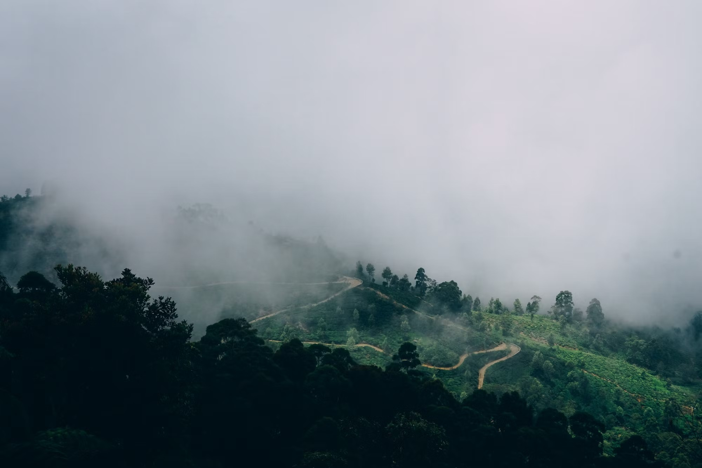
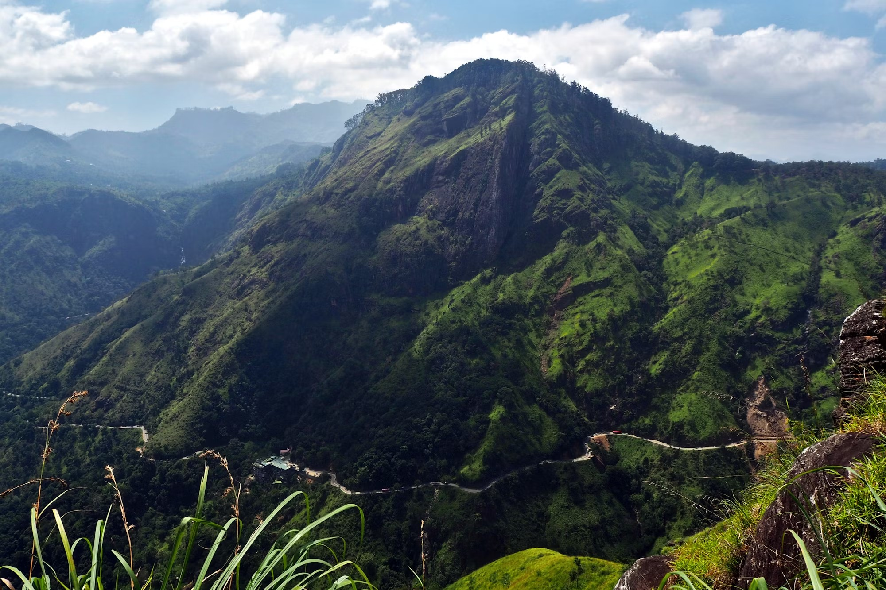
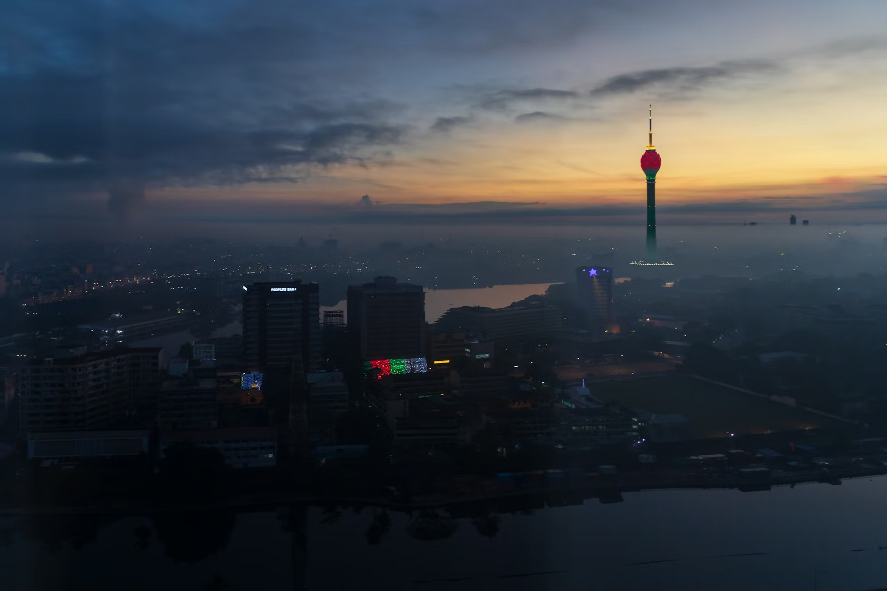
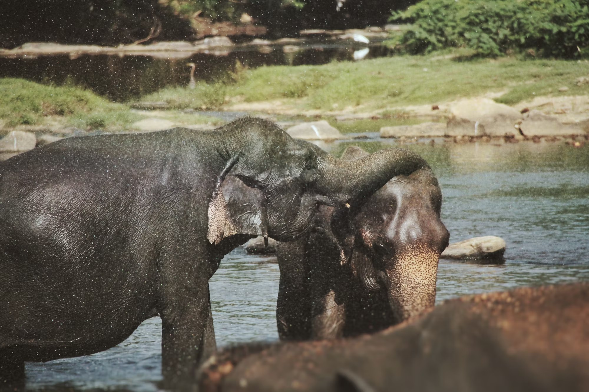
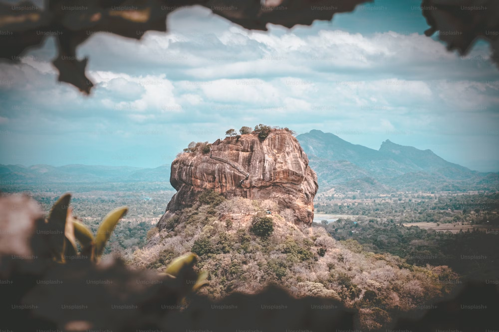

If you’re looking for the most relaxing places in Sri Lanka, this beach lies at a distance of 65 km from the city of Colombo a beautiful beach named Bentota. It is one of the most beautiful beaches in Sri Lanka and a must-visit spot on your trip there.
Unwind and relax on the golden sand of the Bentota beach and enjoy the beautiful sea views. One can also enjoy a boat cruise on the Bentota River and those who are looking for some adventure can enjoy some exciting water activities at the Bentota beach. Don’t forget to explore the best places to visit in Bentota while wandering here!
MATARA
Dondra Lighthouse
View from Sea
Dondra Lighthouse was made in the era when Sri Lanka was a colony. This could be understood by the way of its construction. This building is very tall and you will get a very good view of the nearby surrounding areas when you stand on the top of it. This looks beautiful because of the rows of palm trees that are there across the building and also because it seems as if the top of this building is meeting the sky.
IN BETWEEN NUWARA ELIYA & HAPUTALE
Horton Plains
peak wilderness & Beautiful sceneries
The list of the top 10 places to visit in Sri Lanka is incomplete without the mention of Horton Plains National Park. Those who enjoy being in nature and love hiking should definitely make a trip down to the Horton Plains. The terminal point of the hike is the world’s end from where you will get to enjoy the ethereal views. You will also find misty waterfalls, enchanting lakes, and a variety of flora-fauna in the park

HAPUTALE
Lipton’s Seat
Attracting Viewpoints
The Scottish tea baron Sir Thomas Lipton used to survey his burgeoning empire from here. Lipton’s seat is a panoramic overlooking destination in Sri lanka. Handapanagala lake, Chandrika lake, Uda walwe lake, Wedi hiti Kanda mountains, and also the hambanthota harbor alocated in the in the southern coastal area nd five provinces in Sri Lanka can be seen remarkably. The Dambetenna longest tea factor

ELLA
Little Adam's Peak
Mountain views & Hiking
Little Adam's Peak in Sri Lanka is a popular tourist attraction named after the sacred Adam's Peak (Sri Pada) due to their similar shapes. Also known as "Punchi Sri Pada," it stands at 1,141 meters and offers stunning panoramic views. The easy hike takes travelers through lush tea plantations, waterfalls, and paddy fields. Visiting in the morning, when clouds roll in, adds to the beauty of the experience. Located near the small town of Ella, Little Adam's Peak highlights Sri Lanka's rich natural beauty and is a must-visit destination for tourists.

COLOMBO
Lotus Tower
Tallest in Asia
The Colombo Lotus Tower – South Asia’s tallest self-supported structure and Sri Lanka’s tallest skyscraper – was established in 2012. Over the past ten years since its inception up to now, the city of Colombo has watched as the tower transformed the landscape of the city. The Lotus Tower grew from a mere stem to a monumental structure that resembles the country’s rapid development in technology and tourism. Colombo Lotus Tower Management Company (Pvt) Ltd was established in March 2022 under the Treasury, and all its transactions are audited by the Auditor General’s Department. Accordingly the tower was opened to public on 15th September 2022 with an overwhelming excitement from the public.
ELLA
Nine Arch Bridge
Ride Amidst The Greenery
This is one of the iconic and famous places in Sri Lanka which is known for being surrounded by lush greenery and panoramic views. Located at the small mountain town of Ella, the Nine Arch Bridge was built in the early days of the railway expansion in Sri Lanka. The unique thing about the bridge is that it is made of sheer cement, stone and brick, without the use of any steel. The most beautiful view that the visitors can admire is the train rolling over the bridge while they make their move towards the Demodara Loop.

PINNAWALA
Pinnawala Elephant Orphanage
Having herd of elephants
Pinnawala Elephant Orphanage is a renowned sanctuary in Sri Lanka, established in 1975 to care for orphaned, injured, or abandoned elephants. Located near the town of Kegalle, this unique facility is home to a large herd of elephants, providing them with a safe and nurturing environment. Visitors can witness daily routines like feeding and bathing, as well as observe the elephants roaming freely in a semi-wild setting. The orphanage plays a vital role in elephant conservation, rehabilitation, and education, making it a popular destination for both tourists and wildlife enthusiasts.
MIRISSA
Coconut Tree Hill
ocean views & sunset walks
Coconut Tree Hill in Mirissa is a stunning, must-visit viewpoint located on Sri Lanka's southern coast. Famous for its picturesque cluster of towering coconut trees set against the backdrop of the Indian Ocean, this hill offers breathtaking panoramic views, especially during sunrise and sunset. The serene and scenic location is popular among photographers, travelers, and nature lovers, providing a perfect spot to relax and take in the beauty of Sri Lanka’s tropical landscape. Positioned near the beach, Coconut Tree Hill captures the essence of Mirissa’s natural charm and coastal allure.

MATALE
Sigiriya Rock
Natural rock to Beautiful fortress
Sigiriya, also known as Lion Rock, is an iconic ancient fortress located in central Sri Lanka. Rising nearly 200 meters above the surrounding plains, this UNESCO World Heritage Site is famous for its unique rock formation and impressive history. Built by King Kashyapa in the 5th century, Sigiriya served as both a royal palace and a fortress. Visitors can explore its well-preserved frescoes, ancient water gardens, and the massive lion-shaped entrance that gives the rock its name. The summit offers breathtaking views of the surrounding landscapes, making Sigiriya one of Sri Lanka's most popular and culturally significant destinations.
HAMBANTHOTA
Yala National Park
Amidst the wildlife
Yala National Park, located in southeastern Sri Lanka, is the country’s most famous wildlife reserve and a must-visit for nature enthusiasts. Known for its diverse ecosystems, including forests, grasslands, and lagoons, Yala is home to an array of wildlife, including elephants, leopards, sloth bears, crocodiles, and a variety of bird species. It has one of the highest leopard densities in the world, making it a top destination for wildlife safaris. The park's rich biodiversity and scenic landscapes, combined with its role in conservation, make Yala a key attraction for both tourists and wildlife lovers.